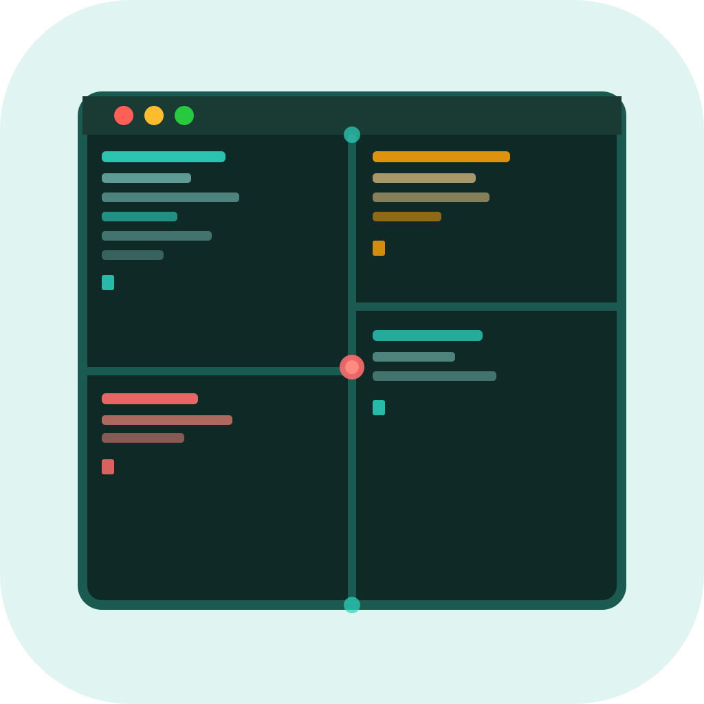
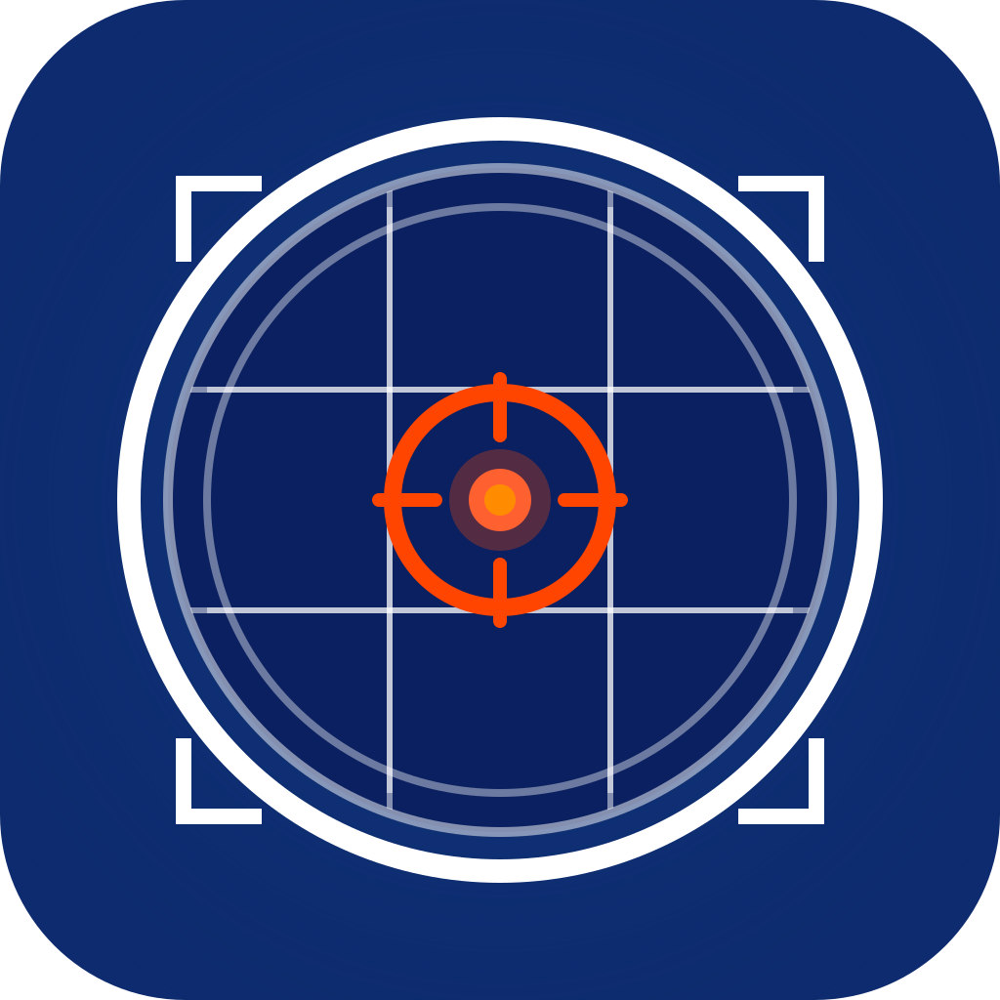

Pane.Cast — 아이콘 후보
Candidate_20260321_0312 | Windows Terminal 세션 레이아웃 저장/복원기

icon_01.svg
기하학 추상 · literal
4분할 터미널 격자 레이아웃
민트파스텔 + 딥틸 + 코랄오렌지
icon_02.svg
대각선/동적 · metaphor
중심 발사점에서 4창이 방사 (Casting)
딥퍼플 + 레몬옐로우 + 흰색

icon_03.svg
중앙 심볼 · hybrid
카메라 뷰파인더 + 격자 (세션 스냅샷)
코발트블루 + 흰색 + 오렌지레드